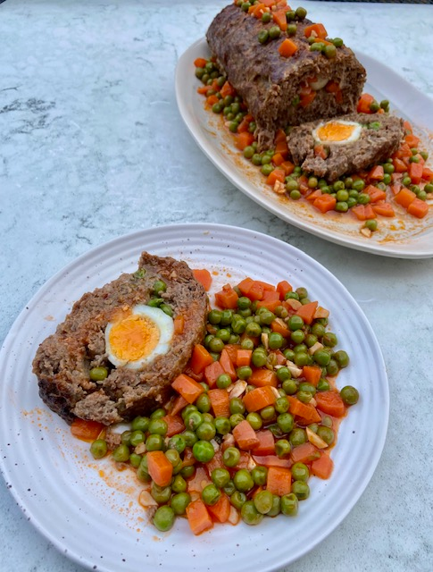

Dalyan Kofte

Description
We Turks love köfte, our meatballs and we have so many variations.
This Dalyan Köfte is a showstopper, and surprisingly easy to make.
I remember my mother making it at special occasions when I was a child.
It is in the shape of a substantial meatloaf with boiled eggs in it, garnished with peas and carrots in tomato sauce.
It makes a lovely meal with mashed potatoes aside; some folks enjoy it with plain pilaf too.
It is delicious and impressive to serve; I hope you enjoy making Dalyan Köfte at home.
Ingredients
- 5 medium eggs, hard boiled and peeled
- For the köfte/meatloaf mixture:
- 1kg/2lb 3oz minced/ground beef (5-10% fat)
- 2 medium onions, grated
- 2 medium eggs (save 1 egg white to glaze the meatloaf later)
- 60g/2oz bread crumbs (use gluten-free bread to make the dish gluten-free)
- 1tsp pul biber (use less if you prefer)
- 1tsp ground cumin
- Sea salt and freshly ground black pepper to taste
- For the rest:
- 2 medium carrots, trimmed and cut into pea size pieces
- 255g/9oz fresh or frozen peas
- 4 garlic cloves, finely chopped
- 2tbsp double concentrated tomato paste
- 2tbsp olive oil
- 255ml/9fl oz water
- Sea salt and freshly ground black pepper to taste
- Chunks of bread, rice or mashed potatoes to serve
Steps
- Place the diced carrots in a small pot, pour in plenty hot water, partially cover and simmer for 10 minutes, until carrots are partially cooked and still have a bite to them Drain and set aside.
- Place all köfte ingredients into a large mixing bowl (saving 1 egg white in a small bowl for later). Season with salt and ground black pepper and knead well with your hands for about 2-3 minutes, until all mixed well. Turn into a large köfte loaf, cover with a cling film and leave to rest in the fridge for 1 hour.
- Preheat fan oven to 180C/350F. Place baking paper on a large tray and have a small bowl of water with a drizzle of olive oil aside to help shape the meatloaf.
- Take the meatloaf mixture from the fridge and place on the baking paper over the tray. Wet your fingers over the water and olive oil mixture and gently press and expand the meatloaf into a 35cmx28cm rectangular shape with about 1cm height. Place the peeled boiled eggs on a line horizontally across the center of the rectangular meatloaf sheet. Spread 3 tbsp carrots and 3 tbsp peas at both sides of the eggs, leaving 3cm at both ends of the line with no filling.
- Gently roll the meatloaf sheet over the filling, with the help of the baking paper (peeling off the baking paper as you roll), making a tight roll. Close and tuck both ends of the meatloaf, sealing the filling in. Brush the top and sides of the meatloaf liberally with the spared egg white – this will help keep the meatloaf intact and give a lovely glaze. Bake in the preheated oven for 45-50 minutes, until lightly browned at top and the meat is cooked.
- Just before the meatloaf is cooked, pour in the olive oil into a wide pan and stir in the garlic and tomato paste. Cook over medium to high heat for 2 minutes, stirring often. Then add the remaining carrots and peas to the pan, combine well. Pour in the water, season with salt and ground black pepper and bring to a boil. Then lower the heat and simmer for about 4-5 minutes, until peas and carrots cooked but not mushy.
- Take the cooked meatloaf out of the oven, rest for 5 - 8 minutes (this will make the slicing easier. Then cut into thick slices, garnish with the hot cooked peas and carrots in tomato sauce over and aside of Dalyan Köfte. Serve immediately with chunks of bread, rice or mashed potatoes aside.
HomePage